SISTEMAS DE NUMERAÇÃO
Nós usamos no nosso dia-a-dia o sistema de números decimais o que significa que com 10 símbolos (0, 1 ,2, 3, 4, 5, 6, 7, 8 e 9) representamos todos os valores que precisamos. Mas se só tem 10 símbolos, como representamos mais do que isso? É bem simples, é o que acontece quando chega em 9 por exemplo e queremos expressar um número maior, pegamos o número seguinte e adicionamos o primeiro número da sequência que é o 0 e fica 10 e assim vamos adicionando cada vez o próximo número 99, 100,101 e 10599, 10600.
Agora que sabemos como fazer um número maior, vamos ver como funcionam as bases e como podemos expressar um valor.
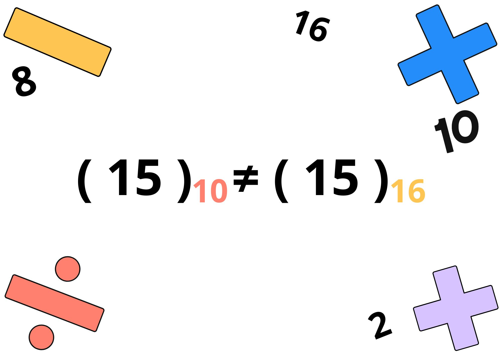Ambos os números são iguais 1 e o 5 porém como as bases são diferentes eles expressam valores diferentes (15)10 é equivalente a (F)16 e (15)16 é equivalente a (21)10. Mas o que seriam as bases? Os números que as bases têm são o número de símbolos de cada uma, por exemplo base 2 corresponde aos números binários (0 e 1).
Depois que aprendemos como escrever os números isso se tornou algo automático porém para as conversões precisamos lembrar das formas de escrever um número
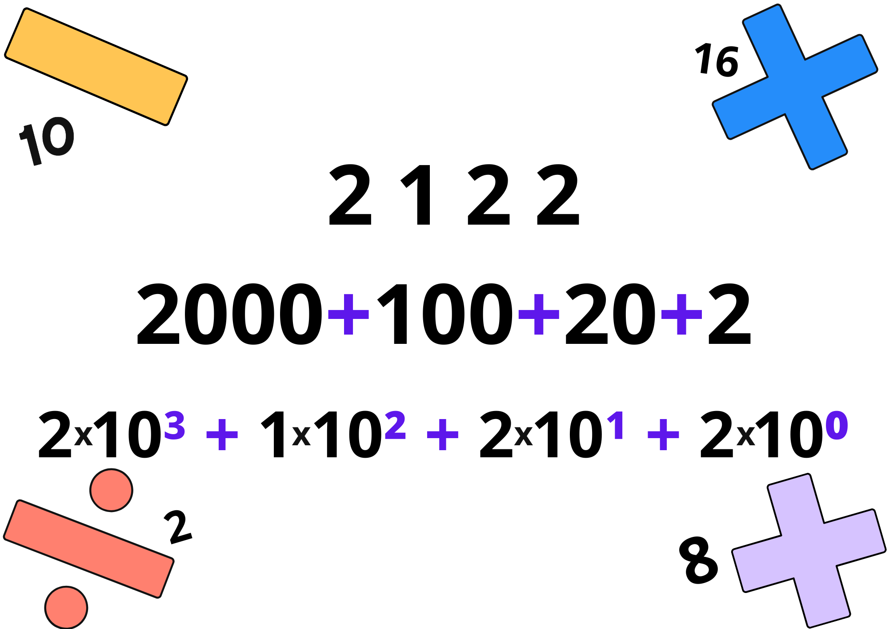As três formas estão corretas de se escrever um número uma está escrita como conhecemos, outra o número está decomposto em unidade de milhar, centena, dezena e unidade e a última forma está escrita utilizando potências de 10 pois estamos falando de um número decimal.
NÚMEROS BINÁRIOS
Tem dois dígitos 0 e 1 e com esses dois dígitos são formados infinitos números, eles seguem o que vimos acima, como são só dois símbolos existe muito mais a criação de uma casa decimal nova.
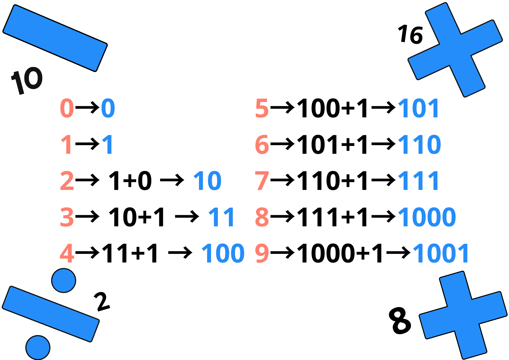
Conversão de Decimal -> Binário
Para transformar binários em decimais se usa as potências de 2, primeiro relembrando 0 multiplicado por qualquer coisa é 0, qualquer número elevado a 0 é 1 e que qualquer número elevado a 1 é ele mesmo.
É muito importante lembrar a tabela abaixo para as outras operações.
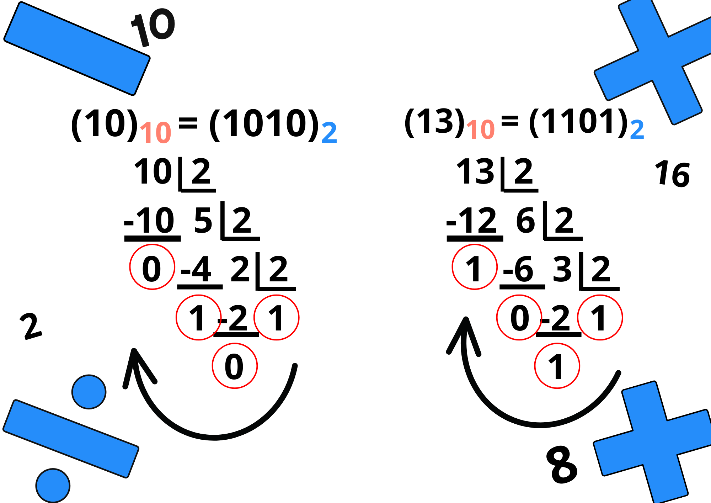Conversão de Binário -> Decimal
Para transformar binários em decimais se usa as potências de 2, primeiro relembrando 0 multiplicado por qualquer coisa é 0, qualquer número elevado a 0 é 1 e que qualquer número elevado a 1 é ele mesmo.
Após relembramos isso vamos para a conta em si, primeiro escreva o número com um espaço em baixo e puxe uma seta de cada número para baixo e escreva 2 embaixo de cada número, começando da direita para a esquerda escreva as potências na sequência 0,1,2,3,4,... depois disso desconsidere todos os zeros no número binário e escreva em outro local apenas os uns que tinham multiplicados pela sua potência e faça as multiplicações o resultado obtido é o valor na base decimal.
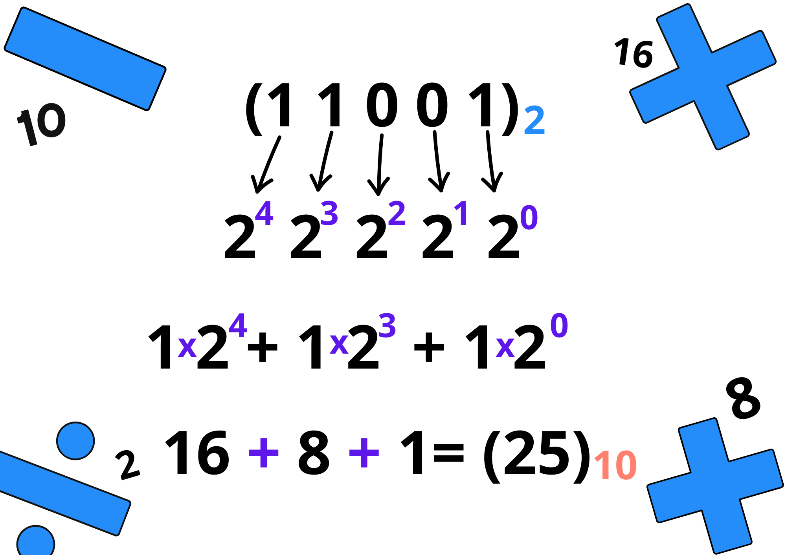Adição com binários
A adição de binários é a operação XOR ( eXclusive OR) em programação, é uma adição igual a que aprendemos quando criança porém com a lógica dos números binários. Que é basicamente o que vimos antes de como fazer um número maior, porém como só existem dois símbolos é feita com maior frequência e isso pode ser confuso.
Após relembramos isso vamos para a conta em si, primeiro escreva o número com um espaço em baixo e puxe uma seta de cada número para baixo e escreva 2 embaixo de cada número, começando da direita para a esquerda escreva as potências na sequência 0,1,2,3,4,... depois disso desconsidere todos os zeros no número binário e escreva em outro local apenas os uns que tinham multiplicados pela sua potência e faça as multiplicações o resultado obtido é o valor na base decimal.
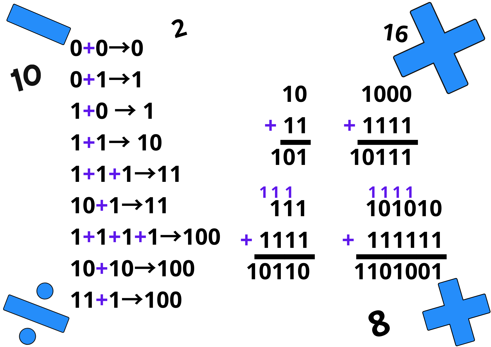Subtração com binários
Segue a mesma lógica que a adição porém inversa ao invés de aumentar os números se diminui eles como 101,100,99 o caminho decrescente.
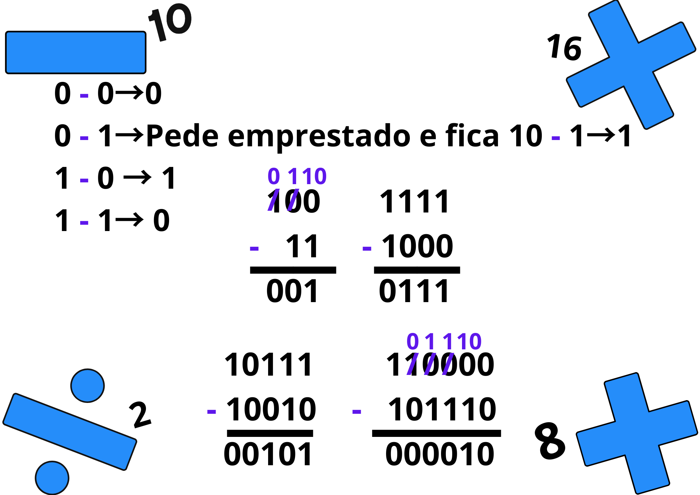Multiplicação com binários
Igual a multiplicação comum, no entanto como só temos 0 e 1 ou repete o número(multiplica por um) ou zera a multiplicação(multiplica por zero) e se faz uma soma no final.
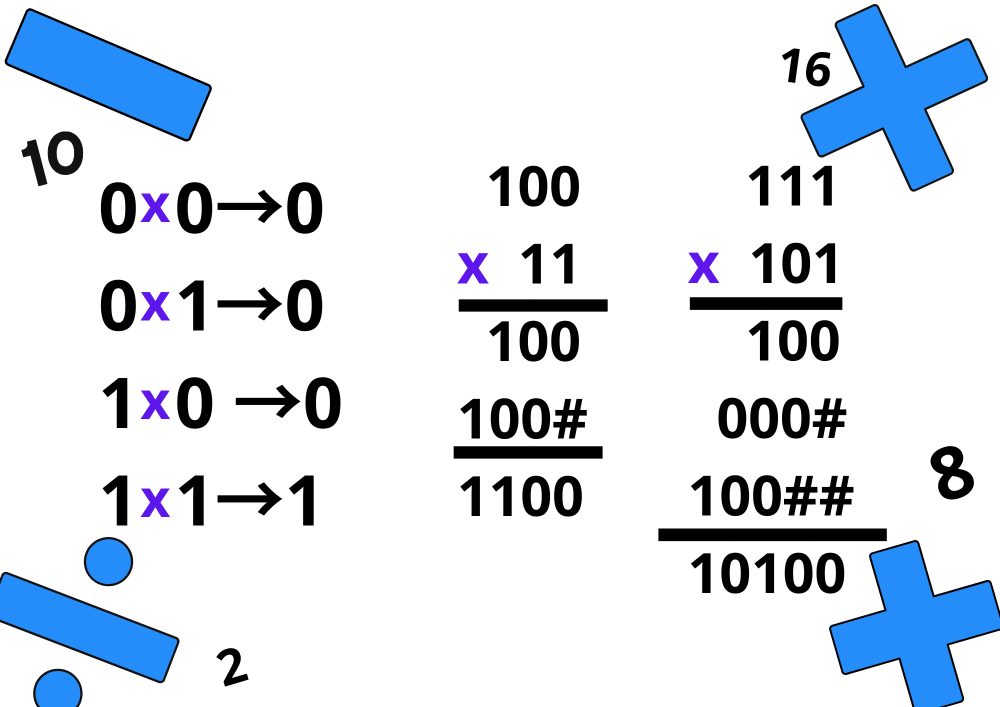Divisão com binários
O quociente sempre vai ser 0 ou 1 logo igual a multiplicação ou tudo divide ou nada divide (não utilizamos casas decimais o que significa que pode sobrar resto mas é possível utilizar casas além da vírgula) é possível simplificar cortando os últimos zeros.
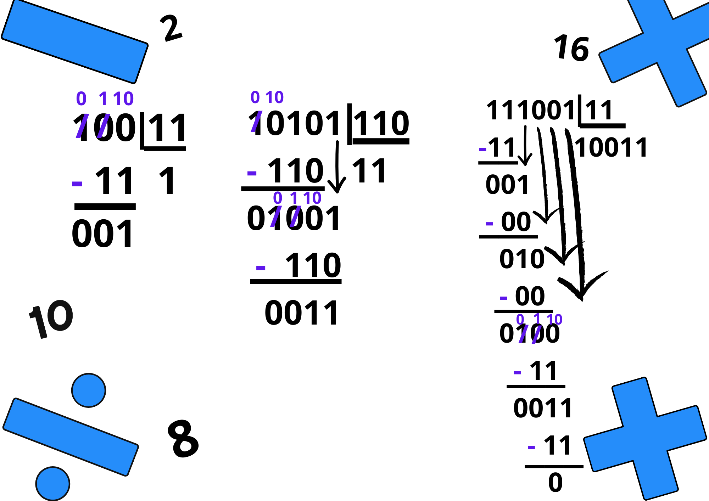NÚMEROS OCTAIS
Tem oito símbolos ( 0, 1, 2, 3, 4, 5, 6 e 7) e com eles são feitos infinitos números, contas e equações com o mesmo esquema de criação de um número maior como ocorre nos binários e decimais.
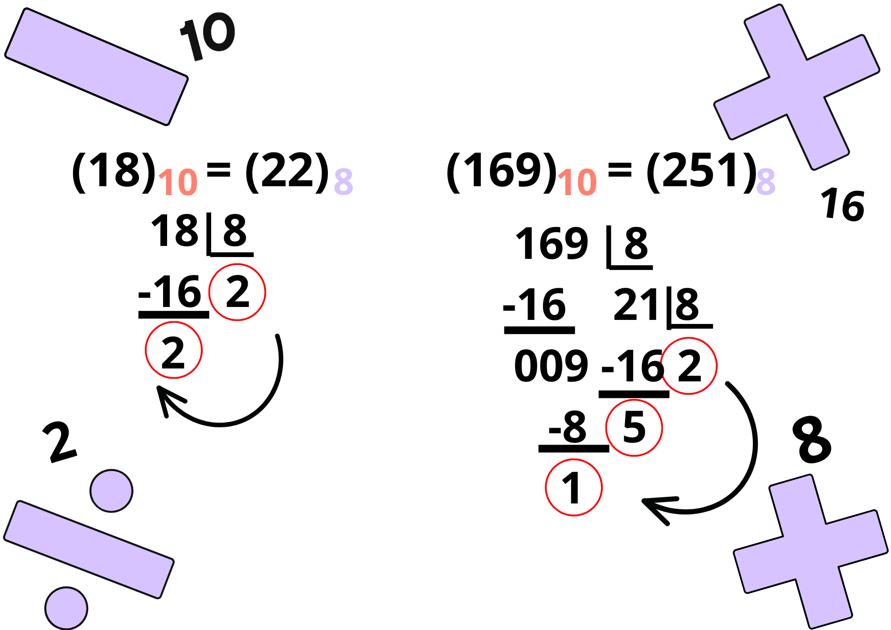Tem a mesma transição do binário que para transformar de decimal para octal se usa as divisões sucessivas por 8 e para transformar de octal para decimal se utiliza potências de 8
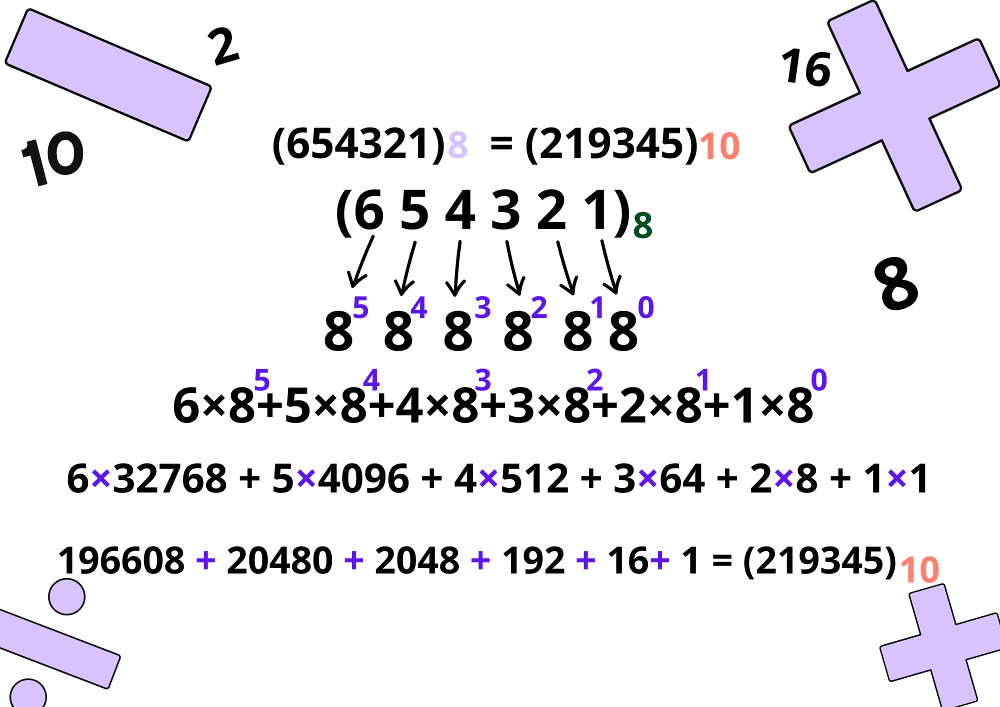
Um fato interessante é que como o número 8 tem uma ligação direta por potência como o 2, 2³=8 as bases também, mas como isso acontece? Como podemos ver dois elevado a terceira potência resulta em oito são 3 números binários para 1 octal ou 1 octal para 3 binários.
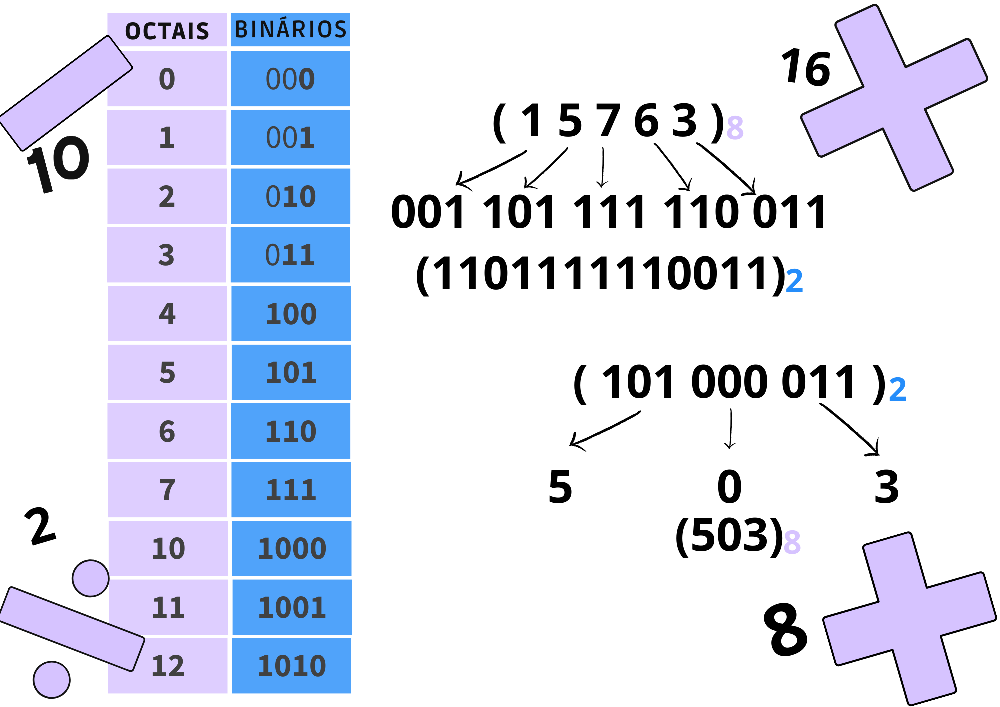NÚMEROS HEXADEMAIS
São 16 símbolos, sendo eles 0,1,2,3,4,5,6,7,8,9,A,B,C,D,E e F. Esse sistema utiliza 5 letras como símbolos e ele é utilizado para expressar as cores no padrão RGB que com a combinação desses símbolos é possível expressar 16 milhões de cores.

Para transformar de decimal para hexadecimal se divide por 16 sucessivamente e de hexadecimal para decimal se faz potências de 16 como com as outras bases.
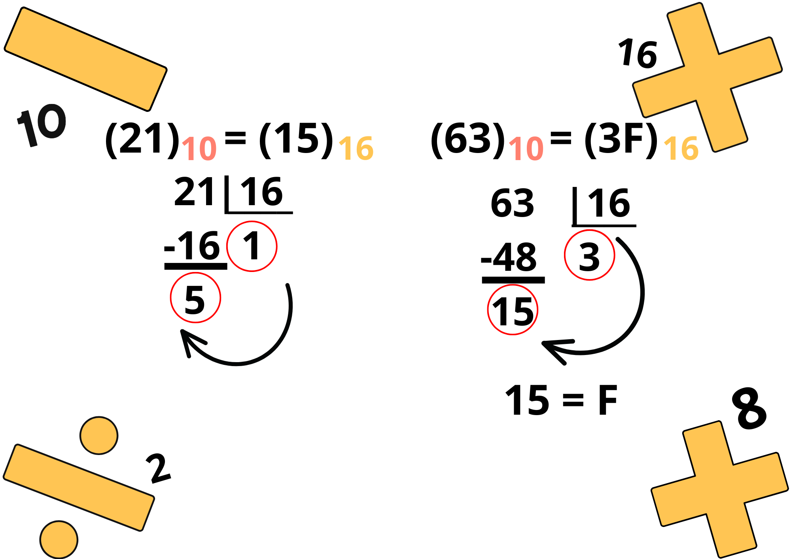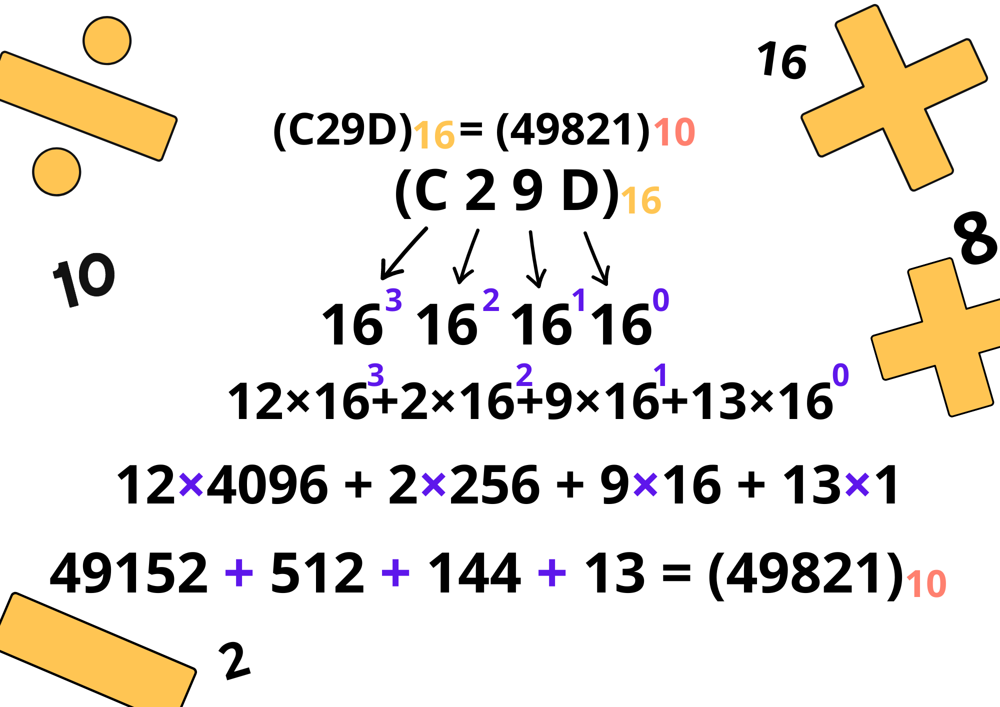
Para transformar binários em hexadecimal segue a mesma regra dos octais porém como 16 é a potência 2⁴ são quatro dígitos binários para um hexadecimal.
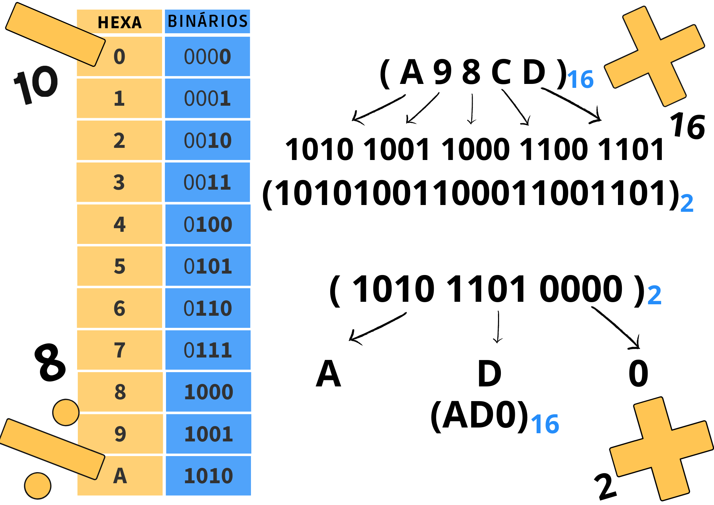